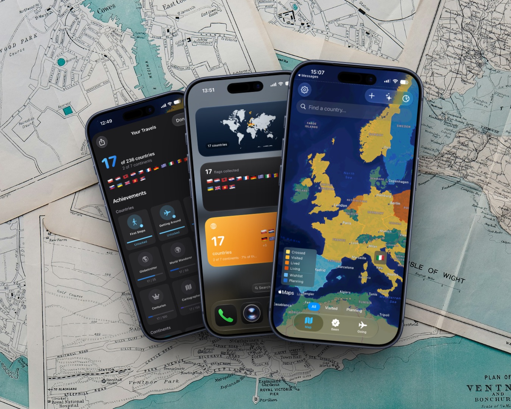
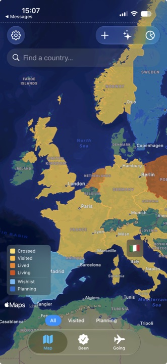
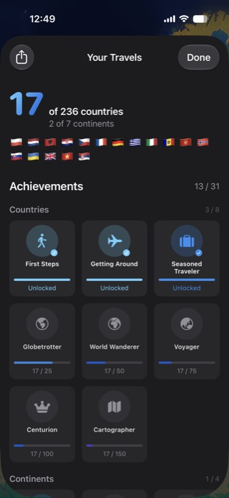
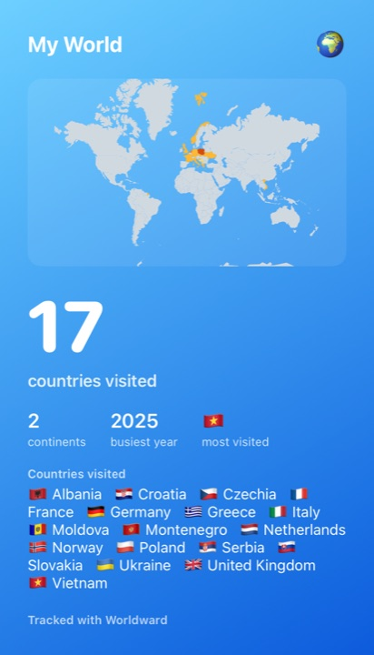
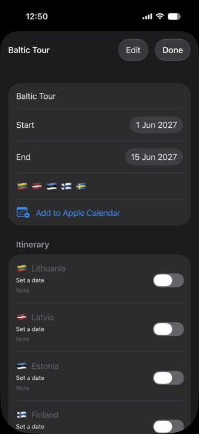
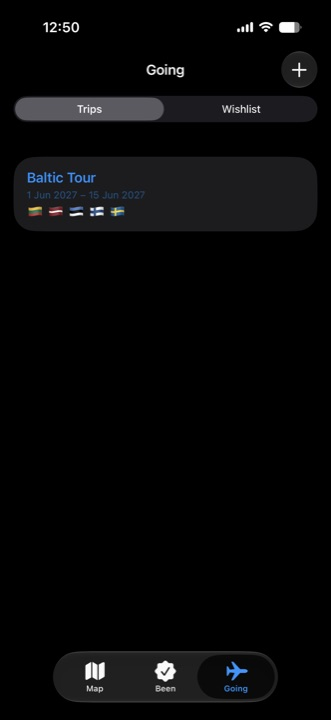
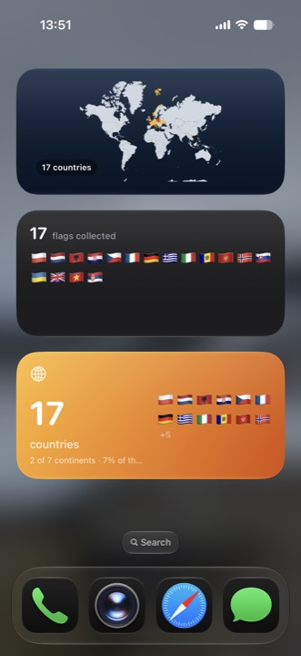
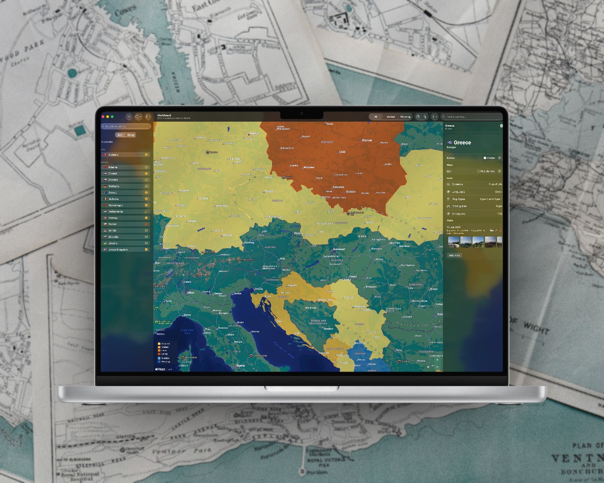

Every country you've crossed, visited or lived in — on a beautiful interactive map. Log visits, plan trips, earn badges and watch your world fill with colour. Native on iPhone, iPad and Mac.

Built entirely with SwiftUI, MapKit and SwiftData — fast, native and offline-friendly.
~250 tap-able countries from Natural Earth data, down to outlying islands. Warm colours for where you've been, cool blues for where you're going.
Record visits with dates, notes and photos from your library. Multiple visits per country, each with its own story.
Multi-country itineraries with reorderable stops, packing lists with reusable templates, calendar export and Markdown sharing.
Badges for countries, continents, streaks and depth — all computed on-device, celebrated with a toast when you earn them.
Dashboards, per-year charts, travel streaks, a chronological timeline and shareable year-in-review cards.
Ask free-form questions about your travels and get year recaps and destination picks — powered by Apple Intelligence, entirely on your device.
Scan your photo library to detect countries from geotagged photos and turn them into visits — your photos never leave the device.
Home Screen and Lock Screen widgets, a Control Center “Mark where I am” button and full Shortcuts support.
Swipe through — this is the real app, not a concept.






Not a port — a real macOS app with the details Mac users expect.

Worldward is built the way personal software should be.
Your travel data lives on your device. There is no server, no account and no sign-up.
No analytics, no ads, no third-party SDKs. The app makes no network calls of its own.
Travel Chat and recaps run through Apple Intelligence on your device — nothing is sent to a cloud model.
Export everything as JSON or CSV at any time. Open source under MPL-2.0.
The fine print, kept short: read the privacy policy.